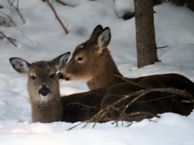
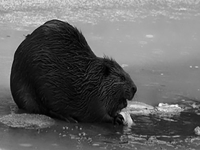

Wildlife
Honest moments from the deer I encounter.
Wildlife • Real Moments • Natural Conditions
Authentic wildlife photography focused on real encounters, real conditions, and what nature actually looks like in the moment.
Featured Work
No setups. No replacements. Just what was there.

Honest moments from the deer I encounter.

Real conditions, real behavior, no staging.